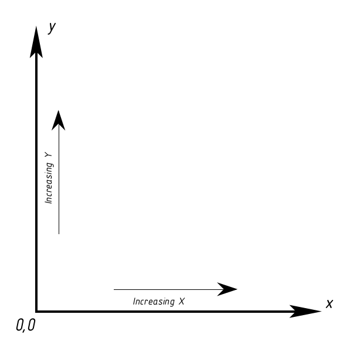

Next: Filenames, Previous: File format overview, Up: gEDA file format [Contents][Index]
All coordinates are in mils (1/1000 of an inch). This is an arbitrary decision. Remember in there is no concept of physical lengths/dimensions in schematics and symbols (for schematic capture only).
The following figure shows how the coordinate space is setup:
X axis increases going to the right. Y axis increase going up. Coordinate system is landscape and corresponds to a sheet of paper turned on its side.